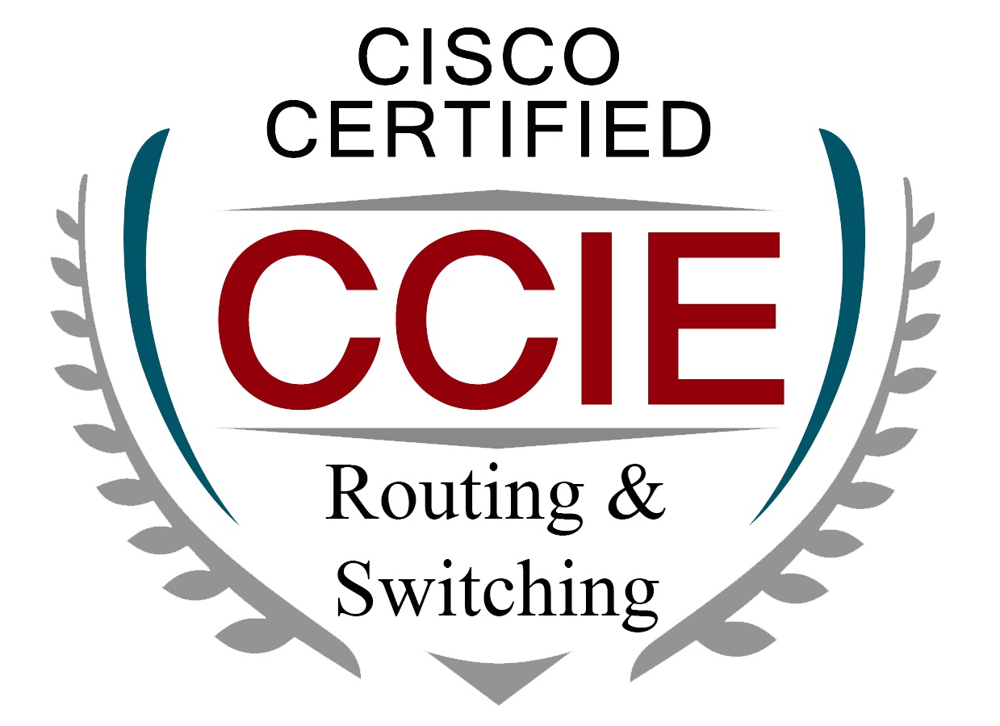
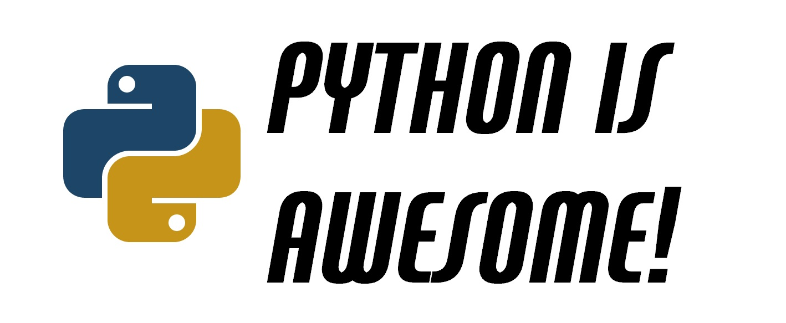

Hi! My name is Pedro Alexander Díaz Quiroga. I studied electrical engineering at Universidad de la Salle, after graduating I worked in the area of telecommunications. I always liked physics and especially electromagnetism. I studied a Master in teleinformatics in Universidad Distrital. In 2007 I get my CCIE R&S certification from Cisco Systems where I worked. Now I am very interested in data engineering so I am studing Master of Information Engineering at Universidad de los Andes in Bogotá Colombia. From August 2016 I am getting expertise in programming languages such as Python and javascript in different projects of telecomunications and data engineering.
In this website you will find out more about me, the projects I have worked on and the things I’m interested in. Here is a condensed version of my trajectory in pdf format:
In the following blog posts you can find more information about the projects I have worked on:
|  |  |

Begin working at Impsat (after Global Crossing, level3, century link)

Master Science in teleinformatics

Get CCIE (Cisco Certified Internetwork Expert

Beging working at Desca (Grupo Amper)

Begin working at Cisco Systems

Begin Studying Master of Information Engineering

What? SURF (Summer Undergraduate Research Fellowship)
When? Summer 2016
Where? NASA’s Jet Propulsion Laboratory (JPL), Pasadena, CA, USA.
Advisors? Dr. Andres Plazas, Dr. Jason Rhodes, Dr. Charles Shapiro and Dr. Eric Huff
The observed accelerated expansion of the Universe is one of the biggest enigmas in our current understanding of cosmology and Dark Energy (DE) could be the explanation for it. In order to untangle the science of DE, a new space observatory is being created by NASA: Wide-Field Infrared Survey Telescope (WFIRST). It will map the distribution of Dark Matter (DM) along cosmic history and...
Feel free to send me an email!